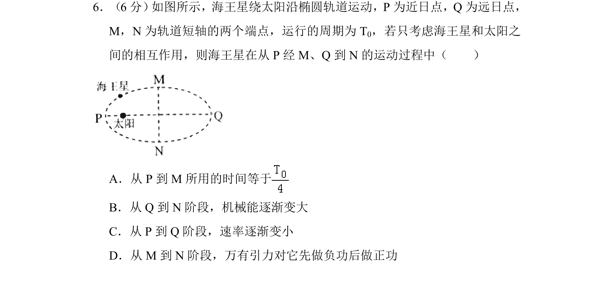
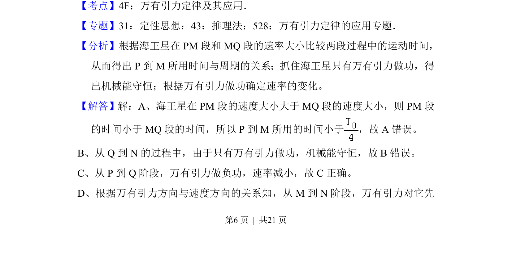
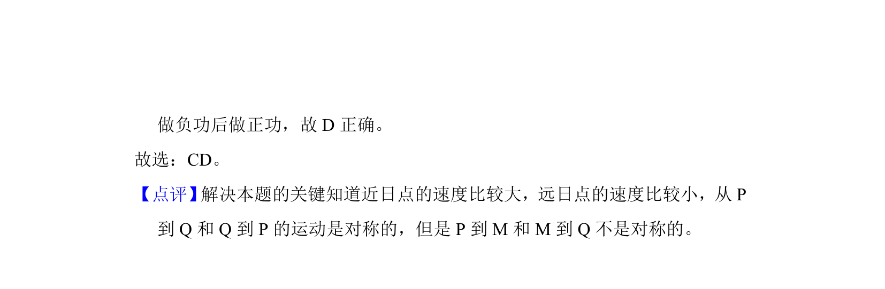

考点：万有引力定律 开普勒定律 行星运动 机械能

海王星沿椭圆轨道绕太阳运动，考查从近日点经短轴端到远日点过程中的时间、速率、机械能和万有引力做功。


📄 原 PDF 第 6 页：
素材/真题/吉林/2008-2024·（吉林）物理高考真题/2017年高考物理试卷（新课标Ⅱ）（解析卷）.pdf
6．（6分） 如图所示，海王星绕太阳沿椭圆轨道运动，P为近日点，Q为远日点， M，N为轨道短轴的两个端点，运行的周期为T 0，若只考虑海王星和太阳之 间的相互作用，则海王星在从P经M、Q到N的运动过程中（ ） A．从P到M所用的时间等于 B．从Q到N阶段，机械能逐渐变大 C．从P到Q阶段，速率逐渐变小 D．从M到N阶段，万有引力对它先做负功后做正功
【考点】4F：万有引力定律及其应用．菁优网版权所有 【专题】31：定性思想；43：推理法；528：万有引力定律的应用专题． 【分析】根据海王星在PM段和MQ段的速率大小比较两段过程中的运动时间， 从而得出P到M所用时间与周期的关系；抓住海王星只有万有引力做功，得 出机械能守恒；根据万有引力做功确定速率的变化。 【解答】解：A、海王星在PM段的速度大小大于MQ段的速度大小，则PM段 的时间小于MQ段的时间，所以P到M所用的时间小于 ，故A错误。 B、从Q到N的过程中，由于只有万有引力做功，机械能守恒，故B错误。 C、从P到Q阶段，万有引力做负功，速率减小，故C正确。 D、根据万有引力方向与速度方向的关系知，从M到N阶段，万有引力对它先